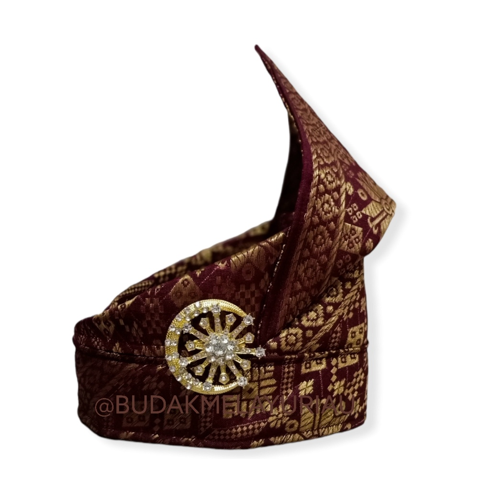
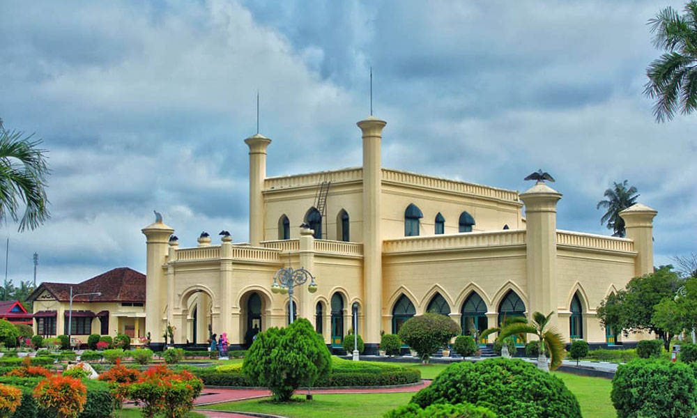
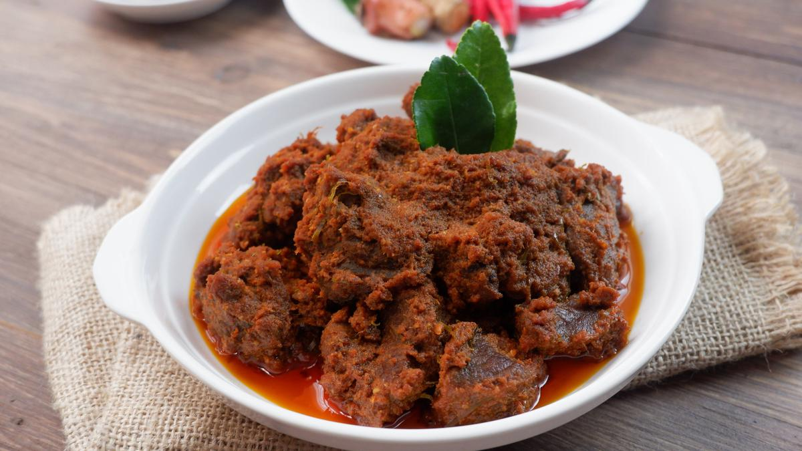
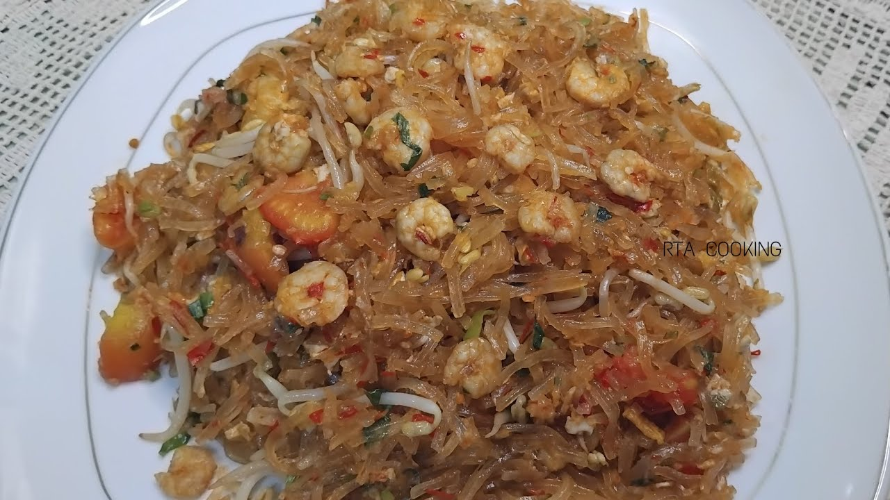
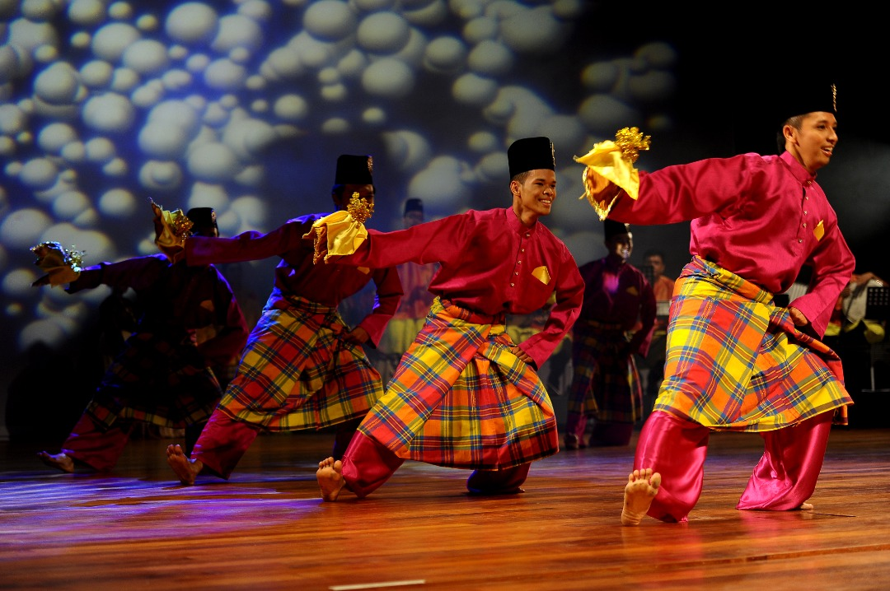

Pakaian Adat Melayu

Tanjak
Tanjak merupakan penutup kepala laki-laki Melayu yang melambangkan kehormatan.

Baju Kurung
Baju Kurung merupakan pakaian adat perempuan Melayu yang terkenal anggun dan sopan.
Melestarikan Warisan Budaya Melayu Siak

Melayu Siak merupakan salah satu warisan budaya yang berasal dari wilayah Kabupaten Siak dan memiliki peran penting dalam perkembangan budaya Melayu di Indonesia. Budaya ini berkembang seiring berdirinya Kesultanan Siak Sri Indrapura yang dikenal sebagai salah satu kerajaan Melayu terbesar di kawasan Sumatra. Masyarakat Melayu Siak menjunjung tinggi nilai-nilai adat, sopan santun, gotong royong, serta ajaran Islam yang menjadi dasar kehidupan sehari-hari. Kekayaan budayanya tercermin dalam bahasa Melayu, pakaian adat seperti tanjak dan baju kurung, tarian tradisional, musik, sastra, hingga berbagai kuliner khas yang masih dilestarikan. Hingga saat ini, budaya Melayu Siak tetap menjadi identitas masyarakat Riau dan terus diwariskan kepada generasi muda melalui berbagai kegiatan adat, pendidikan, dan festival budaya.

Rendang dimasak menggunakan santan dan berbagai rempah hingga menghasilkan cita rasa yang sangat khas.

Mie Sagu berasal dari Kepulauan Meranti. Terbuat dari tepung sagu dan memiliki rasa gurih.

Tanjak merupakan penutup kepala laki-laki Melayu yang melambangkan kehormatan.
Baju Kurung merupakan pakaian adat perempuan Melayu yang terkenal anggun dan sopan.

Tari Zapin terkenal dengan gerakan yang lembut, diiringi musik gambus dan marwas.

Tari Persembahan digunakan untuk menyambut tamu kehormatan dalam adat Melayu.